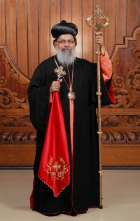

Great Lent.
The Great Lent(വലിയ നോമ്പ്) in the Indian Orthodox Church is a period of profound spiritual reflection and renewal. It involves fasting, prayer, and acts of charity, fostering a deeper connection with God and community. Through abstaining from certain foods and engaging in spiritual disciplines, believers seek purification of the soul and preparation for the celebration of Easter.
Lenten evening prayers.
Good Friday, Holy Saturday, and Easter Services.
The observance of Good Friday, Holy Saturday, and Easter Services holds immense significance in the Christian faith, marking key events in the narrative of Jesus Christ's crucifixion, burial, and resurrection. These services serve as a solemn remembrance of Jesus' sacrifice, the anticipation of his resurrection, and the triumph of hope over despair. Led by H.G. Dr. Gabriel Mar Gregorios, Metropolitan of Trivandrum diocese, these services offer believers a profound opportunity for spiritual reflection, renewal, and celebration, reinforcing the central tenets of the Christian faith. As worshippers gather to commemorate these pivotal moments, they are reminded of the profound love and redemption offered through Jesus Christ, inspiring a deeper commitment to faith and discipleship.
2024 Major Events
| Date | Event |
|---|---|
| 1/5/2024 | Baptism of Jesus |
| 1/20/2024 | Monthly Prayer meeting |
| 1/22/2024 | Three day Lent starts |
| 1/24/2024 | Three day Lent ends |
| 2/1/2024 | Mayaltho |
| 2/12/2024 | Great Lent starts |
| 2/17/2024 | Monthly Prayer meeting |
| 3/5/2024 | Middle Lent |
| 3/2/2024 | Monthly Prayer meeting |
| 3/21/2024 | 40th day of Great Lent |
| 3/23/2024 | Passion Week Retreat |
| 3/24/2024 | Hosanna (Palm Sunday) |
| 3/24/2024 | Annunciation of St. Mary |
| 3/25/2024 | Passion Week |
| 3/26/2024 | Passion Week |
| 3/27/2024 | Passover (Thursday of the mysteries) |
| 3/28/2024 | Passion Week |
| 3/29/2024 | Hasha (The Great Friday) |
| 3/30/2024 | Saturday of the annunciation to the departed |
| 3/31/2024 | Sunday of the Resurrection |
| 4/20/2024 | Monthly Prayer meeting |
| 5/5/2024 | Harvest Festival |
| 5/8/2024 | Feast of the Ascension |
| 5/18/2024 | Monthly Prayer meeting |
| 5/19/2024 | Pentecost |
| 6/15/2024 | Monthly Prayer meeting |
| 6/28/2024 | Apostle's Lent end |
| 6/29/2024 | Patrons day Celebration |
| 6/30/2024 | Patrons day Celebration |
| 7/12/2024 | Sunday School OVBS (Friday) |
| 7/13/2024 | Sunday School OVBS (Saturday) |
| 7/20/2024 | Monthly Prayer meeting |
| 8/1/2024 | 8 Day Lent starts |
| 8/5/2024 | Feast of the Tranfiguration |
| 8/14/2024 | Assumption of the mother of God |
| 8/17/2024 | Monthly Prayer meeting |
| Aug 30 - Sep 1 | Retreat |
| 9/13/2024 | Frestival of the Holy Cross |
| 9/21/2024 | Monthly Prayer meeting |
| 10/5/2024 | Family Day: Talent show |
| 10/19/2024 | Monthly Prayer meeting |
| 11/16/2024 | Monthly Prayer meeting |
| 12/1/2024 | Nativity fasting starts |
| 12/1/2024 | Christmas Carol House visits |
| 12/7/2024 | Ecumenical Christmas Choir program |
| 12/8/2024 | Christmas Carol House visits |
| 12/15/2024 | Christmas Carol House visits |
| 12/20/2024 | Matyrdom of St.Thomas |
| 12/21/2024 | Miracles of Christmas |
| 12/22/2024 | Christmas Carol House visits |
| 12/25/2024 | Christmas |
| 12/31/2024 | New Year |